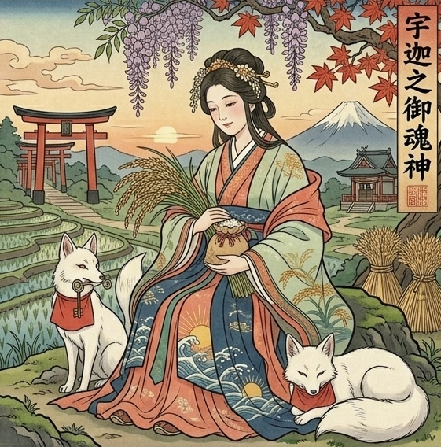

武田瑛弘様
守護神が、
一つの景色を見せてくれています。
あなたが、
小さな場所で、
誰かと向き合って、
静かに笑っている姿。
派手な成功ではありません。
けれど、
何かを差し出して、
それを受け取った人が、
あなたに「ありがとう」と
頭を下げている。
その景色です。
時期は、
2027年の初夏から夏にかけて。
その最初の兆しは、
実はもう動き始めています。
ちょうどこれから──
2026年の夏から秋にかけての半年が、
あなたの土に最初の種が
運ばれてくる時期です。
そこから動き始めて、
2027年の初夏に「これだ」と感じる形が見え、
58歳を迎える頃から、
ようやく地に足のついた安定期へと
入っていく。
そういう流れが、
あなたの運命に刻まれています。
ただ──
そこに至るまでの道は、
決して平坦ではありません。
「もう一度立てるのか」
「この歳から、何ができるのか」
そういう不安が、
これからも何度も
胸をよぎる時があるはずです。
でも、
安心してください。
あなたには、
それを乗り越える力が
最初から備わっています。
その根拠を、
これからお伝えしていきます。
その景色を見せてくれたのは、
宇迦之御魂神
（うかのみたまのかみ）。

昔、まだ田畑の少なかった頃。
宇迦之御魂神は、
人々に稲の種を授け、
その育て方を教えてくださった神様です。
種を蒔き、
水を引き、
雑草を取り、
何ヶ月もかけて稲を育てる。
その地味な営みの一つひとつに、
神様は寄り添ってくださいました。
やがて田んぼには黄金の稲穂が実り、
人々は飢えから救われた。
「更地から、種を蒔き、
実りを育てる神様」として、
今も全国の稲荷神社に祀られています。
派手な金運の神様ではなく、
コツコツと根を張り、
時間をかけて実らせる神様。
今のあなたに、
これ以上ふさわしい守護はありません。
あなたの中に本来ある、
場を温める力。
これを、
これからの人生のどこに向ければいいのか。
ここから視えていることを
お伝えします。
霊視で視えているのは、
あなたの温かさが
「お金を直接生む力」ではなく、
「人を集める力」だということ。
これはとても大事な区別です。
お金を直接狙いに行く生き方を選ぶと、
あなたの定めとは噛み合いません。
けれど、
「人が集まる場」を作りに行くと、
その流れの中から
お金が後から付いてきます。
順番が、
あなたの場合は逆なのです。
運命を深く視ていくと、
あなたが最も力を発揮できるのは、
こういう領域です。
人を育てる場。
人をケアする場。
人と向き合って、
時間をかけて関わる場。
たとえば、
食を通して人を温める仕事。
誰かの生活を支える仕事。
小さな技を、
弟子のような人に教えていく形。
土や自然に近い場所で、
人と関わりながら働く形。
業種の名前は、
ここでは絞りません。
大切なのは、
「人と短く関わって去る仕事」ではなく、
「人と長く関わって何かを育てる仕事」
であること。
ここに、
あなたの温かさは
真っ直ぐに流れていきます。
そして、
これからの十年間──
53歳から62歳までのあなたには、
非常に強い人縁の流れが
入ってきます。
「自分一人で立て直す」のではなく、
「人と組んで動く」ことで運が開ける。
あなたより少し格上の人、
あなたを引き上げてくれる人、
あなたを必要としてくれる人。
そういう存在と組むことで、
あなたの温かさが
具体的な仕事の形になっていきます。
「自分で何かを立ち上げなければ」
「一人で全部背負わなければ」
そう力まなくて大丈夫です。
あなたの定めは、
そういう動き方を求めていません。
「人を介して動く」
「人の流れに乗って動く」
これが、
これからのあなたの正しい歩き方です。
更地に戻ったあなたの土に、
これからどんな種が
蒔かれていくのか。
ここを視ていきます。
霊視で視えているのは、
今年──2026年の夏から秋にかけて、
「新しい知恵」「新しい人」「新しい情報」が
向こうから運ばれてくる流れです。
あなたが自分から
必死に探しに行くのではありません。
向こうから、
運ばれてくる。
その兆しは、
意外な人からの連絡。
昔の知り合いからの紹介。
通っているお店や、
何気なく入った場所での出会い。
そういう、
予測のつかない形でやってきます。
そして、
今年あなたのところに来る種は、
すぐには芽を出しません。
冬の間、
土の中で静かに育ち、
来年──2027年に入ってから、
ゆっくりと形を見せ始めます。
宇迦之御魂神が
稲を育てるように、
あなたの種も、
急がず、確かな順番で
育っていく流れです。
そして、
58歳を迎える頃から──
ここからの十年が、
あなたの人生で
最も地に足がついた時期になります。
派手な飛躍ではありません。
けれど、
種が根を張り、
茎が伸び、
やがて実をつけていく。
そういう、
確かな十年です。
宇迦之御魂神が
稲を育てるように、
あなたの仕事も、
ここから一年、また一年と、
時間をかけて根を張っていきます。
ただし──
ここで一つだけ、
注意しておきたいことがあります。
来年あなたのところに来る種の中には、
「安定だから」という理由で
選びたくなるものが
混じってきます。
世間が「これが正解」と言いそうな種。
周りの人が
「絶対こっちにしなさい」と言う種。
そういうものは、
あなたの定めでは育ちません。
土の質が合わないからです。
「自分の感覚で、
ここに置いてみたい」
そう感じる種を選んでください。
世間体ではなく、
胸の奥の感覚で選ぶ。
これが、
来年あなたが守るべき
たった一つのルールです。
これから一年から二年の間に、
あなたの数字が
具体的に動き始める瞬間が
何度か訪れます。
その時期と、
その時に取るべき態度を、
順にお伝えします。
2026年7月〜10月：種が運ばれてくる時期
最初の動きは、
ちょうど今──
2026年の7月から10月にかけて。
ここは、
人からの紹介、
情報、
支援の流れが
連続して動き出す時期です。
特に、
8月。
この月は、
あなたの運命に
「学びと支援の星」が
二重に重なって入ってくる、
今年の最大の窓です。
紹介や情報が、
向こうから運ばれてくる。
声をかけてくる人が、
増えてきます。
そして9月。
ここは、
あなたらしい表現の種が
ふっと見えてくる月。
10月には、
同じ方向を向いた人たち、
同志のような人との繋がりが
固まっていきます。
この四ヶ月の間の正しい態度は、
「断らない」こと。
たとえ、
すぐに仕事に結びつかなくても、
小さな話でも、
一度受けてみてください。
もし「困っている」と感じることがあれば、
信頼できる相手に
口に出して伝えてください。
「自分で何とかしなければ」と
抱え込まないこと。
この時期に、
あなたを助けてくれる人が
動き始めます。
2026年11月〜2027年1月：小さく形にする時期
次の動きは、
2026年の11月から
2027年の1月にかけて。
ここは、
「あなた自身ができることを、
小さく形にして見せる」時期です。
完璧でなくて構いません。
何か一つ、
「これなら自分にもできる」と思うことを、
小さく動かしてみる。
副業の小さな種でも、
ちょっとした手伝いでも、
何かを始める形でも構いません。
動かすと、
反応が返ってきます。
その反応の中から、
2027年の初夏に向けての
本当の種が選ばれていきます。
2027年5月〜7月：「これだ」と感じる時期 ★
そして、
2027年の5月から7月。
この三ヶ月に──
「これだ」と感じる、
仕事の形、
あるいは人との出会いが、
強く視えています。
特に7月。
あなたの誕生月にあたるこの月は、
あなたの運命の核心と
完全に響き合う、
一年で最も力の宿る月です。
宇迦之御魂神の力が、
この月に最も強く流れ込んできます。
これまで動けなかった人が、
踏み出すための後押しを受ける時期。
この時期に出会うものは、
直感で選んでください。
「世間が何と言うか」ではなく、
「自分の胸の奥が、
これを選びたいと言っているか」。
その感覚で選んだものが、
2027年の後半から動き始める
本当の流れになります。
2027年8月〜年末：数字が動き始める時期
2027年の8月から年末にかけて。
ここで、
数字が具体的に動き始めます。
少しずつですが、
収入の流れが、
安定の方向へと動き始める時期です。
ただし──
この時期に
一つだけ守ってほしい習慣があります。
入ってきたお金の一部を、
必ず手元に残してください。
あなたの定めは、
水のように
お金が流れていく構造を持っています。
入った瞬間に、
人のため、
誰かのため、
家族のためという流れが
自然に立ち上がってしまいます。
これはあなたの温かさの裏返しなので、
止めることはできません。
けれど、
「流れる前に、
一部を分けておく」
ことだけは、
ここから先の習慣にしてください。
金額の大きさは関係ありません。
「分ける」という行為そのものが、
あなたの土に
水を留めておくための儀式になります。
特に、
親や年長者、
家族絡みの出費には、
これまで以上に
線を引いてください。
ここを守れるかどうかで、
58歳以降の安定の厚みが、
大きく変わってきます。
最後に、
今日から始められる、
あなたらしい歩み方をお伝えします。
派手なものではありません。
けれど、
このどれもが、
あなたの運命に流れている
神気を整えていく
大切な動きです。
【朝、太陽を浴びる】
あなたのオーラは金色。
これは、
太陽の光できらめく色です。
毎朝、
窓を開けて、
あるいはベランダや庭に出て、
数分間だけでいいので、
朝の光を浴びてください。
光を浴びるたびに、
あなたの中の金色が、
少しずつ磨かれていきます。
【土に触れる時間を作る】
あなたは「畑の土」の性質を持っています。
土から離れすぎると、
本来の力が出にくくなります。
庭の手入れでも、
鉢植えの植え替えでも、
散歩で土の道を歩くだけでも構いません。
土の感触を、
意識して取り戻してください。
宇迦之御魂神が、
そこから力を流してくださいます。
【入ったお金を、使う前に分ける】
これは
先ほどお伝えした通りです。
入金の翌日に、
たとえ小さな額でも構わないので、
「これは残す」と決めた分を、
別の場所に分けてください。
金額ではなく、
動作そのものが
あなたの土に水を留めていきます。
【温かさを向ける場所を、一つ決める】
あなたの温かさは、
不特定多数に向けると、
自分が空っぽになってしまいます。
「ここに向ける」と決めた、
一つの場所、
一つの仕事、
一人の相手に絞ってください。
絞ることで、
あなたの温かさは
深く根を張っていきます。
【「人と違っていい」と、自分に許可を出す】
あなたは、
人と同じやり方では
本気になれない人です。
これからの再生で、
「世間並みに合わせなければ」と
無理をすると、
また同じように
形にならず流れていきます。
朝、
鏡の前で一度、
心の中で唱えてください。
「私は、私のやり方でいい」
これだけで、
あなたの中の独自の精神世界が、
力を取り戻していきます。
もし余裕がある時だけ、
以下のことを試してみてください。
無理にすべてやる必要はありません。
「これならできそう」と思うものを、
一つだけでも構いません。
宇迦之御魂神の総本社は、
京都の伏見稲荷大社です。
そして宇迦之御魂神は、
全国の稲荷神社に祀られています。
あなたのお住まいから最も近く、
かつ宇迦之御魂神とご縁のある神社を
お伝えします。
稲荷神社（埼玉県比企郡ときがわ町椚平484）
大宮神社（埼玉県入間郡越生町上野1732）
照稲神社（埼玉県比企郡吉見町高尾新田154）
稲荷神社（埼玉県比企郡吉見町大和田684）
中野原稲荷神社（埼玉県入間市上小谷田1-1-5）
ご自宅から近く、
日常の中で立ち寄りやすい場所です。
参拝の際は、
以下の祝詞を心の中で唱えてください。
祓え給い、清め給え、
神ながら守り給い、幸え給え
（はらえたまい、きよめたまえ、
かむながらまもりたまい、さきわえたまえ）
そして、
お願い事を唱えるのではなく、
「私は、ここから歩き直します。
どうか見守っていてください」
という形で伝えてください。
神様へのお願いは、
願望を叶えてもらうのではなく、
自分が動くことを宣言し、
その歩みを助けていただくもの。
その姿勢が、
守護神との縁を
より深くしてくれます。
朝、
空を見上げて、
深呼吸を一度。
それだけで、
あなたの中の金色が
磨かれていきます。
疲れが溜まったと感じる日は、
塩をひとつまみ入れたお湯に
浸かってください。
水の流れが整い、
余分なものが流れていきます。
あなたには、
守護神とのご縁をお伝えし、
その力を、
あなたの奥底に置いてきました。
また、
守護神と縁のある神社と、
参拝の際に力を取り入れる方法も
お伝えしました。
基本的には、
これで万全です。
ただ、
守護の力は、
何もしなければ
少しずつ薄れていくものです。
なかなか時間が取れない、
神社が遠くて頻繁には行けない、
という方もいらっしゃると思います。
そのような方に、
ぜひお勧めしたいのが、
パワーストーンの依代です。
守護神の力を石に宿し、
常に身近に
持ち歩くことができるようになります。
ただ、
どんな石でもよいわけではありません。
あなたが持つ潜在的なエネルギーと、
宇迦之御魂神が共鳴しやすい石で
お作りする必要があります。
あなたのエネルギーと
守護神が共鳴しやすい石を、
三つお伝えします。
この中から、
あなたのエネルギーと
最もバランスが取れる組み合わせを、
私が選び、
一つずつ手作りで仕上げます。
ご希望の方は、
「詳細希望」と
メッセージをお送りください。
武田瑛弘様、
あなたの未来には、
人と向き合い、
誰かを温め、
その流れの中から
静かに実りを受け取っていく日々へと
続く道が視えています。
土地は更地に戻りました。
けれど、
更地とは、
何もないということではありません。
これから、
新しい種が蒔かれるための、
最も自由な土です。
今は、
不安の中にあるかもしれない。
「この歳から、
本当にやり直せるのか」と
迷っているかもしれない。
でもそれは、
あなたの魂が、
本気でここから動こうとしている証拠です。
正しい感覚です。
あなたは、
人を温めることで
人生が動いていく人。
派手に稼ぐ定めではなく、
徳から流れてくる豊かさを
受け取っていく定め。
その温かさを、
これから出会う人へ向けてください。
一人ですべてを背負わず、
これから訪れる人縁の流れに、
身を委ねてください。
それが、
あなたの幸せへの道。
宇迦之御魂神が、
あなたを守っています。
更地となったあなたの土に、
これから一粒ずつ、
種を蒔いてくださいます。
実りは派手ではありません。
けれど、
確かに育っていきます。
あなたは、
幸せになっていい。
自分を大切にしていい。
人に頼っていい。
守られている。
その事実を、
どうか受け取ってください。
本日より、
遠隔守護祈祷を行い、
あなたの幸せを願います。
あなたの未来に、
黄金の稲穂のような実りが
満ちますように。